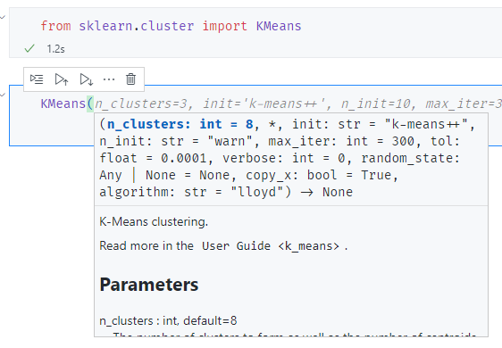
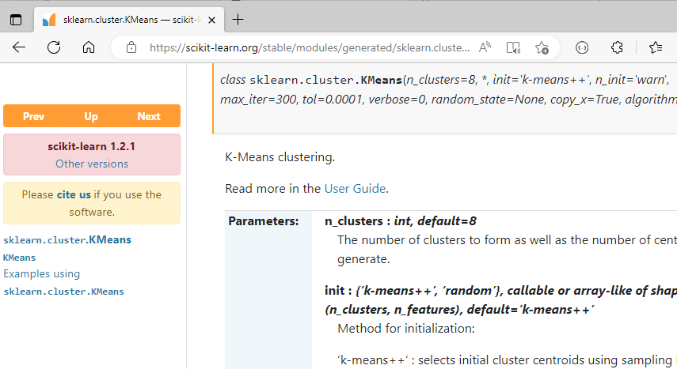
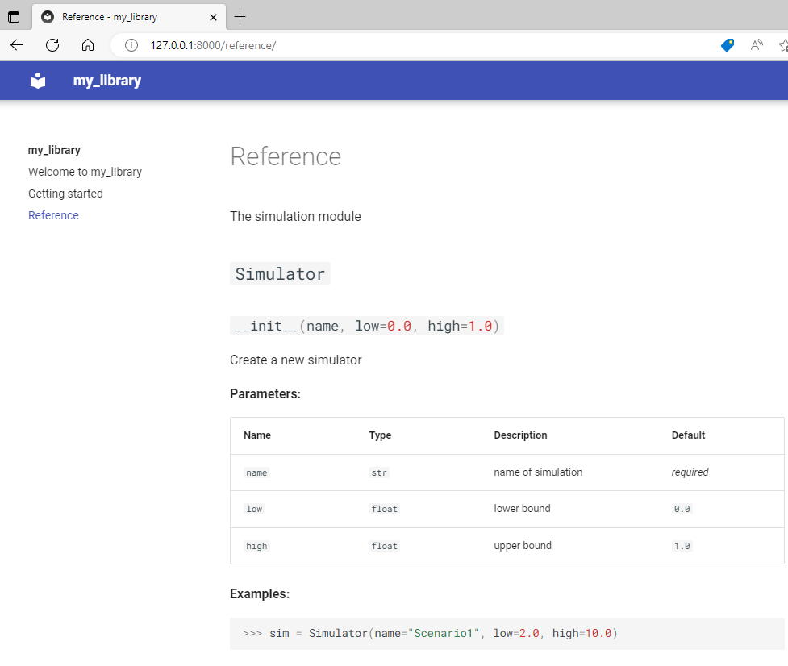
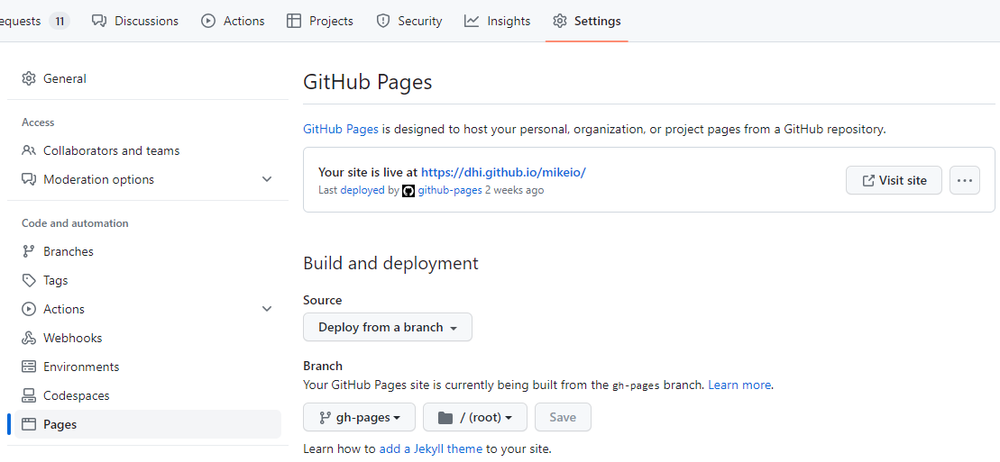

Documentation
Why document your code?

- Make it easier for others to use your code
- Make it easier for you to use your code
Readme.md
- A readme file is a text file that introduces and explains a project.
- Always include a readme file in your project.
- You can put readme files in any directory, and you can have more than one in a single project.
Requirements
- Mention the requirements for your package
- Operating system
- Python version
- Other non-Python dependencies, e.g. VC++ redistributables
- Include information on how to install your package
pip install my_packagepip install https://github.com/DHI/{repo}/archive/main.zip
Notebooks
- Jupyter notebooks are a great way to document your code
- Good for prototyping
- In a later stage, notebooks can be used to demonstrate how to use your code
- Not a replacement for documentation for a professional package
Docstrings
"""K-means clustering."""
class KMeans(_BaseKMeans):
"""K-Means clustering.
Parameters
----------
n_clusters : int, default=8
The number of clusters to form as well as the number of
centroids to generate.
Examples
--------
>>> X = np.array([[1, 2], [1, 4], [1, 0],
... [10, 2], [10, 4], [10, 0]])
>>> kmeans = KMeans(n_clusters=2, random_state=0, n_init="auto").fit(X)
>>> kmeans.labels_
array([1, 1, 1, 0, 0, 0], dtype=int32)>>> from sklearn.cluster import KMeans
>>> help(KMeans)
class KMeans(_BaseKMeans)
| KMeans(n_clusters=8, *, init='k-means++', n_init='warn')
|
| K-Means clustering.
|
| Parameters
| ----------
| n_clusters : int, default=8. . . 

Write once, read anywhere!
Docstring - Numpy format
def function_name(param1, param2, param3):
"""Short summary.
Long description.
Parameters
----------
param1 : int
Description of `param1`.
param2 : str
Description of `param2`.
param3 : list of str
Description of `param3`.
Returns
-------
bool
Description of return value.
"""
passThere are several docstring formats. The most common is the numpy format, used by scikit-learn, pandas, numpy, scipy, etc.
Type hints
From Python 3.6, type hints can be used in addition to the type in the docstring.
def remove_outlier(data:pd.DataFrame, column:str, threshold:float=3) -> pd.DataFrame:
"""Remove outliers from a dataframe.
Parameters
----------
data : pd.DataFrame
Dataframe to remove outliers from.
column : str
Column to remove outliers from.
threshold : float, optional
Number of standard deviations to use as threshold, by default 3
doctest
Using code without documentation is hard, but using code with wrong documentation is even harder.
How can you make sure that the documentation is correct?
. . .
The answer is the doctest module built in to the Python standard library.
. . .
The extensive standard library is why Python is described as a language with “batteries included!”
Input, output examples in docstrings are run as tests.
def add(a, b):
"""Add two numbers.
>>> add(1, 2)
3
>>> add(1, 3)
5
"""
return a + b. . .
$ python -m doctest -v add.py
Failed example:
add(1, 3)
Expected:
5
Got:
4
**********************************************************************
1 items had failures:
1 of 2 in mod.add
***Test Failed*** 1 failures.Doctest can pick up anything that looks like a Python session and run it as a test.
Documentation generators
- Sphinx
- mkdocs
Sphinx has been around for a long time, has lot’s of functionality but is based on reStructuredText. mkdocs is a new kid on the block, based on markdown and has a lot of functionality.
mkdocs
- Text is written in markdown
- Easy to use
- API documentation can be generated with mkdocstrings
- The end result is a static website that can be hosted on e.g. GitHub pages
Configuration
mkdocs.yml
site_name: my_library
theme: "material" # or readthedocs, mkdocs, etc.
plugins:
- mkdocstrings:
handlers:
python:
options:
show_source: false # change if you want able to show source code
heading_level: 2
docstring_style: "numpy" # important!, since default is googleAPI docs
install mkdocstrings
$ pip install mkdocstrings[python]Install theme, e.g. material
$ pip install mkdocs-materialAdd plugin to mkdocs.yml (see above)
Create
index.mdin docs folderRun
mkdocs serveto view locally
. . .
docs/index.md
# Reference
::: my_library.simulation
GitHub pages
- Once you have a static website, you need to share it with the world
- GitHub pages allows you to easily host a static website on GitHub
- The website is available at
https://dhi.github.io/<repository>/ - The website can be created locally by manually editing html pages.
- For use as documentation, it is easier to use a documentation generator like mkdocs.
GitHub pages

“Private” website
- A GitHub repository can be made private
- The website is still publicly available
- In order to “hide” it from search engines, add a
robots.txtfile to the root of the website - This is not a secure way to hide a website, but it is a simple way to hide it from search engines.
robots.txt
User-agent: *
Disallow: /Additional resources
- https://realpython.com/python-project-documentation-with-mkdocs/
Summary
- Documentation is important
- Use a README file
- Use docstrings
- Use type hints
- Use
mkdocsto generate API documentation